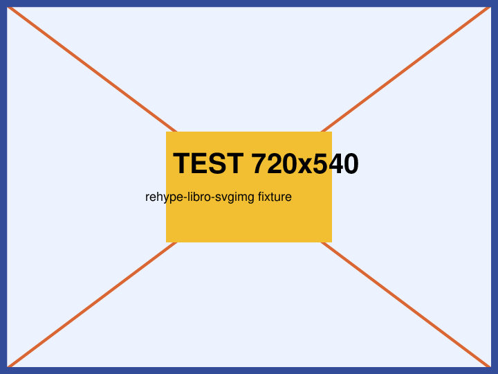

svgimg 照合用フィクスチャ
参照画像: sample.png = 720×540px。
印刷サイズ printW = 720×25.4/72 = 254mm、printH = 540×25.4/72 = 190.5mm（端数なし）。
書式: ?svgimg=倍率,横幅mm,高さmm,横シフト量mm,縦シフト量mm（倍率以外は省略可。幅高さ省略時なりゆき、シフト0）。
各 <!-- --> は移植版／原実装が出力すべき <svg> の期待値（照合の正解）。コメントは両実装とも非対象。
正常系（移植版・原実装で出力一致するはず）
1. 倍率のみ
2. 倍率のみ（README の縮小例と同率）
3. 倍率＋横幅（高さなりゆき）
4. 倍率＋横幅＋高さ
5. フル指定（README の例 30,180,200,-10,-10）
6. 中間フィールド省略（幅高さ空・シフトのみ指定）
7. 小数倍率（round3 の丸め確認）
8. alt テキストあり（alt は figcaption 化されない）
対照群（変換対象外＝<img> のまま残るはず）
9. svgimg クエリなし

10. 別クエリのみ（svgimg を含まない）